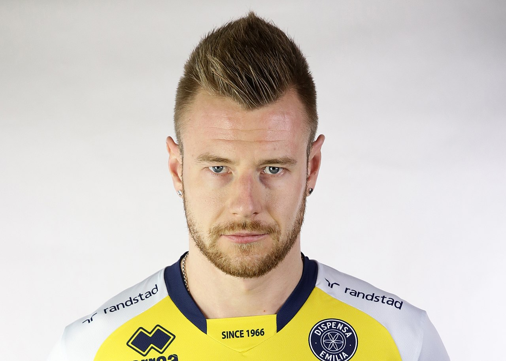

Ivan Zajcev

Je nejlepší volejbalista Itálie a nejlepší střelec utrpěl během světového šampionátu
nešťastné zranění. A to byl jeden z faktorů, proč Itálie zejména nedokázala skončit v Top 4. Výsledek
byl opravdu zklamáním a přiměl italské volejbalové fanoušky vyzvat ke změně.
Rychle vpřed do roku 2019 se Ivan uzdravil, ale máme dostatek důvodů počkat a zjistit, jestli má stále
stejný výbušný nádech, pro který je populární.